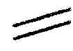

Kant: AA XVIII, Metaphysik Zweiter Theil , Seite 635
Zeile:
Text:
;){kind=link}

Wenn Das allervollkomenste Wesen muß nothwendig (g d.i. ) um[ Seite 634 ] [ Seite 636 ] [ Inhaltsverzeichnis ]
Kant: AA XVIII, Metaphysik Zweiter Theil , Seite 635 |
||||||||||
Zeile:
|
Text:
|
|
|
|||||||
| 01 | seyn, d.i. das Gegentheil desselben würde möglich, also das Ding | |||||||||
| 02 | zufallig und doch nothwendig seyn, welches sich wiederspricht. — Aber | |||||||||
| 03 | aus der andern Art Moglichkeit, auf andere Art bestimmt zu seyn, würde | |||||||||
| 04 | nur ein Wiederspruch mit dem Begriffe des Nothwendigen folgen, wenn | |||||||||
| 05 | vorausgesetzt wird die Durchgangige Bestimmung müsse aus dem Begriffe folgen | |||||||||
| 06 | oder das Nothwendige Daseyn ( welches zugleich die durchgängige Bestimmung enthält) | |||||||||
| 07 | sey ein Daseyn welches schon aus dem Begriffe eines Dinges gefolgert werden | |||||||||
| 08 | könne. Es ist aber kein solcher Begrif moglich woraus das Daseyn gefolgert werden | |||||||||
| 09 | kan ( daher ist auch der Begrif eines nothwendigen Wesens ein blos problematischer | |||||||||
| 10 | Begrif) eben dasselbe Wesen auf eine andere Art bestimmbar gedacht | |||||||||
| 11 | würde. Denn daß ein nothwendig Wesen auf eine Gewisse Art bestimmt | |||||||||
| 12 | ist, ein anderes nothwendige auf eine Andere Art, beweiset nur, daß das | |||||||||
| 13 | nothwendige Wesen durch diesen seinen Begrif gar nicht bestimmt sey ist, | |||||||||
| 14 | was es sey, denn die Existenz ist keine besondere Bestimmung desselben. | |||||||||
| 15 | S. II: | |||||||||
| 16 | |
|||||||||
| 17 |  Wenn Das allervollkomenste Wesen muß nothwendig (g d.i. ) um |
|||||||||
| 18 | dieses Begrifs willen existiren; denn existirte es nicht, so würde ihm eine | |||||||||
| 19 | Vollkommenheit, nämlich die Existenz, fehlen. | |||||||||
| 20 | |
|||||||||
| 21 | |
|||||||||
| 22 | enthielte es sie nicht alle (schon durch seinen Begrif), so würde es durch | |||||||||
| 23 | diesen Begrif in Ansehung einer oder anderer Prädicate unbestimmt, mithin, | |||||||||
| 24 | daß es (g als ) ein als solches und nicht (g als ) ein anderes ist, zufallig, | |||||||||
| 25 | d.i. es würde nicht nothwendig seyn. | |||||||||
| 26 | *(g durch diesen Begrif schon als das Vollkommenste erkannt | |||||||||
| 27 | werden; S. III: denn wäre es nicht als Wesen überhaupt durch alle Realität | |||||||||
| 28 | determinirt, so wäre es in An sondern auch nur in Ansehung einer undeterminirt, | |||||||||
| 29 | so würde es seyn Gegentheil, so wie es ist, sein Gegentheil | |||||||||
| 30 | möglich, es also auch nicht nothwendig seyn. Das folgt aber nicht, denn | |||||||||
| 31 | es würde ein nothwendiges Wesen mit a und auch eins mit non a moglich | |||||||||
| 32 | seyn; d.i. nicht das Gegentheil der Existenz dieses Wesens, sondern | |||||||||
| 33 | der Prädicate desselben unbeschadet der Existenz des Subjects wäre | |||||||||
| 34 | möglich. — Im Cartesianischen Beweise machte man die Existenz zum | |||||||||
| [ Seite 634 ] [ Seite 636 ] [ Inhaltsverzeichnis ] |
||||||||||